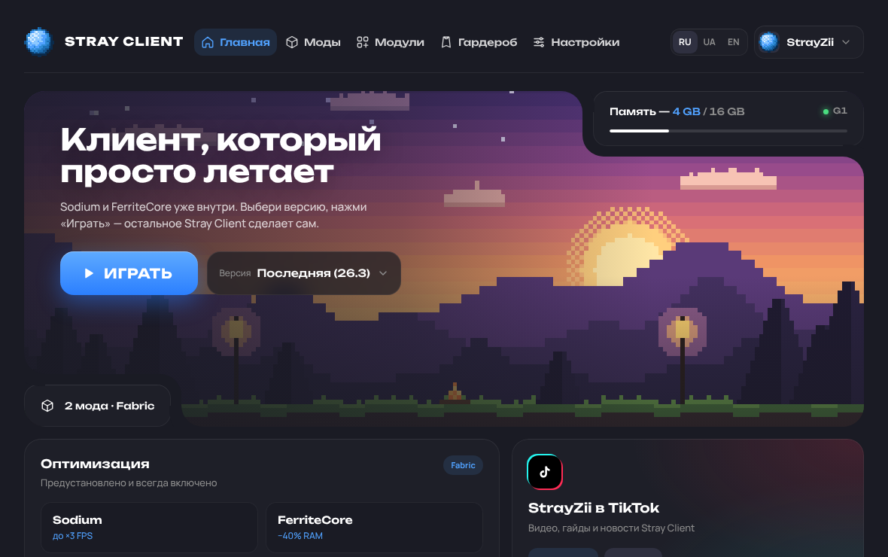

Лёгкий клиент Minecraft на Rust. Sodium и FerriteCore уже внутри, моды из Modrinth и CurseForge в один клик, Java ставится сама. Нажал «Играть» — и ты в игре.
Бесплатно · открытый исходный код · ~10 МБ
Клиент сам скачает Minecraft, Fabric, Java и моды для оптимизации. Тебе остаётся нажать «Играть».
Уже установлены и всегда включены: больше FPS и меньше RAM. Lithium, ImmediatelyFast, EntityCulling и ModernFix ставятся в один клик.
Поиск, установка, включение и удаление модов. Нужные зависимости подтягиваются автоматически, показываются только версии под твою игру.
Файлы качаются параллельно и проверяются по контрольным суммам. Повторный запуск проверяет всё за доли секунды.
Клиент сам скачивает официальную Java от Mojang под нужную версию игры, без ручной установки.
Оптимизированный G1 или ZGC для мощных ПК и компактные заголовки объектов на новой Java. Рекомендуемый объём RAM подбирается под твой ПК.
Как в Lunar: страница входа Microsoft открывается в отдельном окне и закрывается сама. Пароль клиент не видит.
Скин из PNG или от любого игрока — сразу на аккаунт, его видят все. Плюс свой плащ из PNG через мод Stray Client.
Нажатия WASD, клики мыши с CPS, пробел, FPS и пинг — включаются одним переключателем во вкладке «Модули».
Отдельная сборка для M1–M4: нативная Java без Rosetta, а сборщик мусора работает только на производительных ядрах.
Тёмная тема, всё важное на одном экране. Русский, украинский и английский языки. Листай скриншоты →

Это настоящий интерфейс Stray Client: переключай аккаунты, ищи моды в Modrinth, меняй настройки и язык. Только Minecraft в браузере не запустится.
Работает без установки · данные модов — живые из Modrinth
Все четыре клиента бесплатные. Stray Client делает ставку на скорость, лёгкость, моды из Modrinth и CurseForge и открытый код.
| Stray Client | Lunar Client | Badlion Client | Dawn | |
|---|---|---|---|---|
| Размер установщика | 2,7 МБ (Windows) · 7,1 МБ (macOS) | ~3 МБ (Windows), остальное докачивает | ~138 МБ (Windows) | Нет данных |
| Оптимизация | Sodium + FerriteCore всегда, ещё 4 мода в 1 клик | Свои оптимизации | Свои оптимизации | Sodium, Lithium, FerriteCore + 3 мода |
| Моды из Modrinth и CurseForge | Modrinth и CurseForge, с зависимостями | Встроенные моды | Встроенные моды | Только Modrinth |
| Вход Microsoft и несколько аккаунтов | Да, отдельное окно + переключатель | Да | Да, нужен ещё аккаунт Badlion | Нет данных |
| Открытый исходный код | Да, на GitHub | Нет | Нет | Код не опубликован |
| Технология | Rust — для максимальной оптимизации | Electron | Electron | Нет данных |
| Цена | Бесплатно, без рекламы | Бесплатно, косметика платная | Бесплатно, есть платная подписка | Бесплатно, с рекламой, косметика платная |
Источники: официальные сайты Lunar и Dawn, обзоры и каталоги программ (ноябрь 2026). «Нет данных» — если это не удалось надёжно проверить.
Последняя версия с GitHub Releases.
Да. Клиент бесплатный и с открытым исходным кодом. Для игры нужна лицензионная Minecraft Java Edition на аккаунте Microsoft.
Все релизы от 1.20 до самой новой, для которых есть Fabric, Sodium и FerriteCore. По умолчанию выбирается последняя, сменить версию можно на главном экране.
Да. Во вкладке «Моды» ищи в Modrinth или CurseForge и ставь в один клик. Можно и просто положить .jar в папку модов: кнопка «Папка модов» её откроет.
Сборки пока без платной цифровой подписи Apple и Microsoft. На Mac это выглядит как «приложение повреждено» — одна команда в Терминале это исправляет (см. инструкцию при скачивании). Код открыт на GitHub, а установщики собираются автоматически через GitHub Actions прямо из исходников.
Клиент подскажет: обычно 4 ГБ, на ПК с 16 ГБ и больше — 6 ГБ. Больше не значит быстрее: слишком много памяти даёт длинные паузы сборщика мусора.
Скачай Stray Client, войди через Microsoft и нажми «Играть». Остальное он сделает сам.
Скачать Stray Client